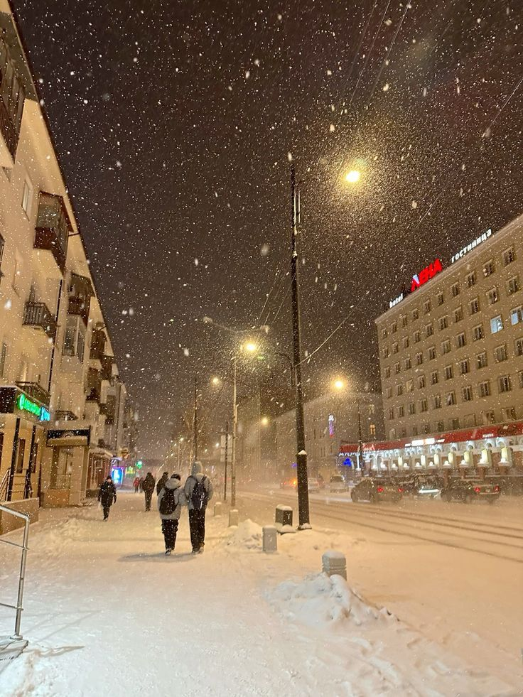

Интерактивный проект
Добро пожаловать в познавательный квиз о Якутии!
Проект представляет собой интерактивную игру-тест, разработанную для ознакомления пользователей с ключевыми географическими, климатическими и природными особенностями Республики Саха (Якутия).
Вопросы подобраны так, чтобы проверить вашу эрудицию и логику. Попробуйте пройти игру, избежав критических ошибок, и установите свой собственный рекорд прохождения.
